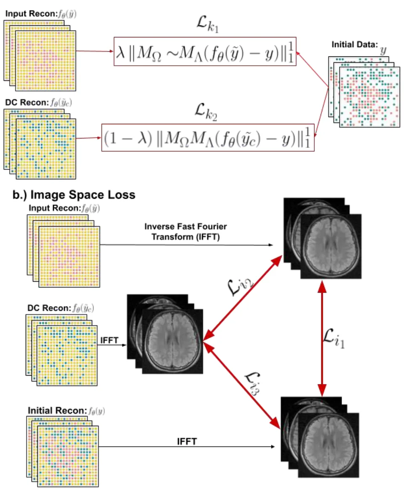
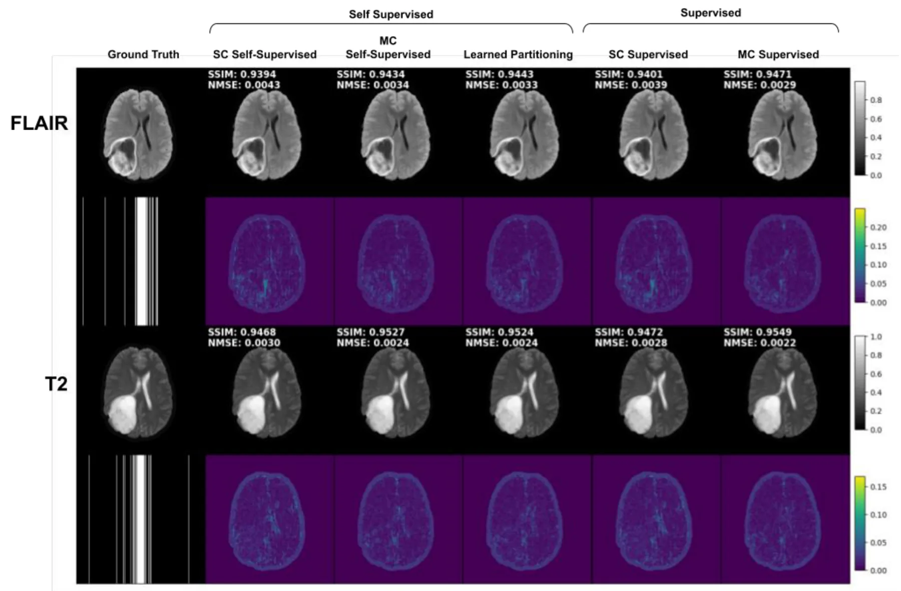
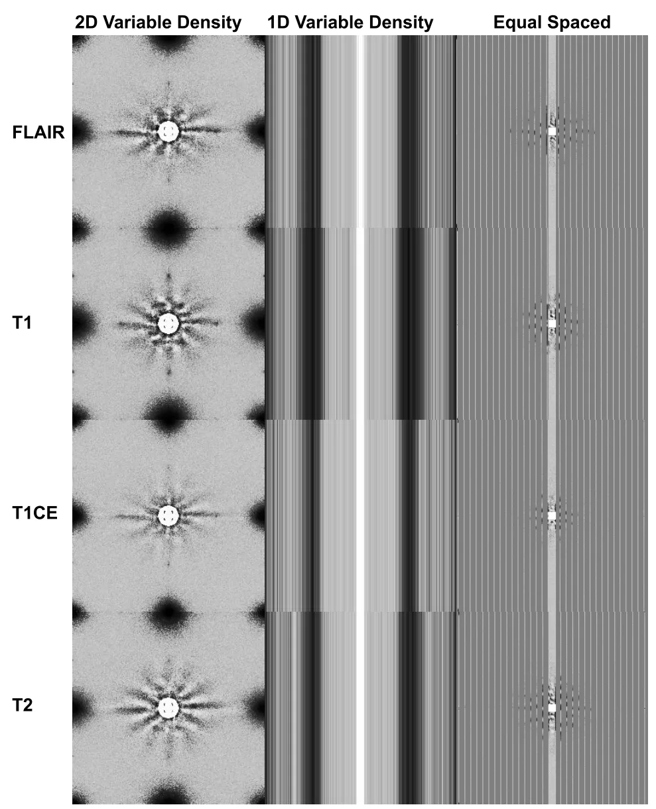
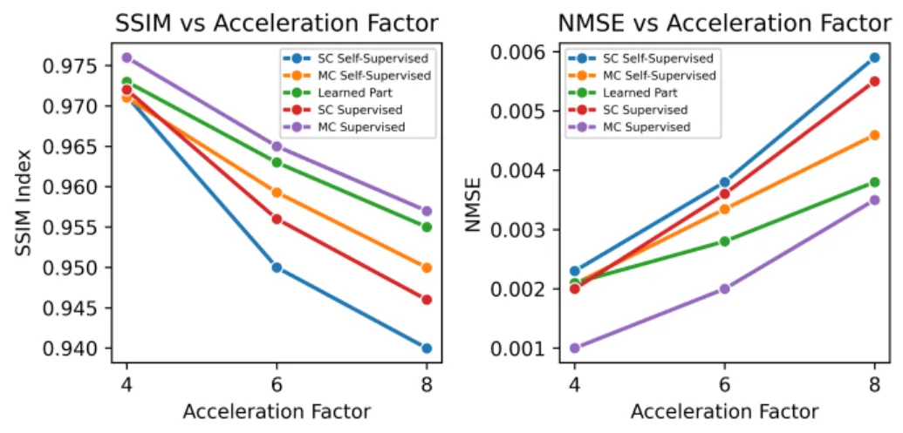
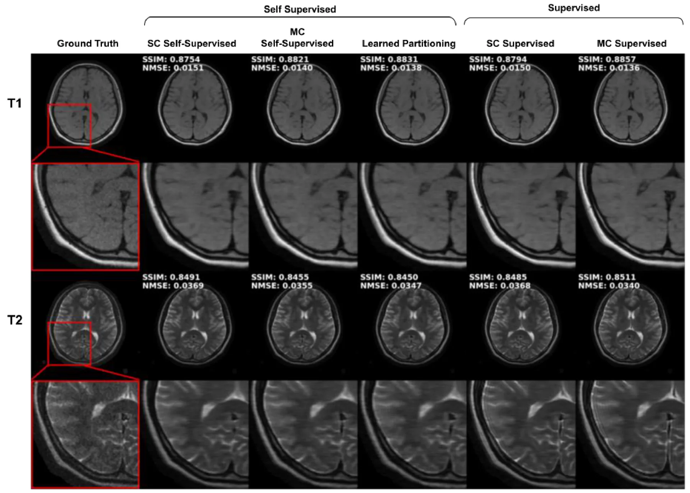
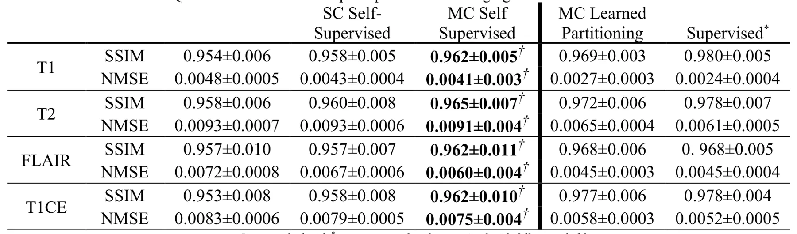
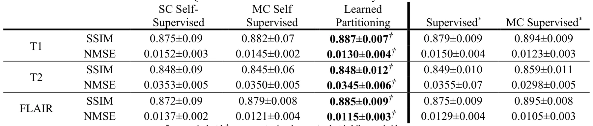

用学习式 k-space 划分优化多对比度自监督 MRI 重建Optimized Multi-Contrast Self-Supervised MRI Reconstruction using Learned k-space Partitioning
医学 MRI 重建与 SLAM/GNSS/三维几何关系较弱；仅可作为自监督采样/重建策略的外围参考。
一句话工作总结
该 MRI 工作把多对比度自监督重建与可学习 k-space 数据划分结合，以在无全采样参考时提升图像重建质量。
摘要
深度学习已用于从欠采样数据重建高质量 MRI 图像。已有多对比度方法可利用不同 contrast 之间的信息，但常依赖 fully sampled k-space 监督；SSDU 则通过把欠采样 k-space 划分为两部分，使网络在欠采样数据上自监督训练。本文提出多对比度自监督学习框架，在无需 fully sampled k-space 参考的情况下联合训练多个欠采样 contrasts，并端到端学习每个 contrast 的最优自监督数据划分。具体做法是学习一个 partitioning probability distribution，从中采样生成划分 mask。两个公开多对比度 MRI 数据集实验显示，多对比度自监督结合学习式划分优于当前单对比度自监督方法，学习划分还能进一步提升重建保真度。
Objective: Deep Learning has shown promise in accelerating MRI by reconstructing high-quality images from under-sampled data. While recent work has leveraged multi-contrast information to improve reconstruction performance, these methods rely on supervised learning, which requires fully sampled k-space for training. One method, self-supervised learning via data undersampling (SSDU), enables direct training on under-sampled k-space by partitioning it into two sets, with a network mapping between the two. In this work, we improve MRI self-supervised MRI reconstruction with two modifications. Methods: We propose a multi-contrast self-supervised learning framework that jointly trains on multiple under-sampled contrasts without requiring fully sampled k-space data as a reference. Moreover, we learn an optimal self-supervised data partitioning for each contrast in an end-to-end manner, further enhancing reconstruction quality. Specifically, we learn an optimal partitioning probability distribution, which is sampled to generate a mask for partitioning. Results: Experiments on two publicly available multi-contrast MRI datasets demonstrate the improved reconstruction quality of our proposed self-supervised multi-contrast learned partitioning method compared to the current single-contrast self-supervised learning methods. We also demonstrate that learning the partitioning of k-space data further enhances the fidelity of reconstructions. Conclusion: Multi-contrast reconstruction combined with learned partitioning improves reconstruction fidelity over single-contrast self-supervised MRI reconstructions. Significance: Our method can facilitate higher image fidelity and/or accelerated MRI protocol times compared to previous self-supervised methods, and without requiring fully sampled k-space for training.
中文解读摘录
- 链接：abs / PDF；作者：Brenden Kadota, Charles Millard, Mark Chiew；类别：eess.IV；采集 score=7。
- 核心思路：面向欠采样 MRI，自监督地联合利用多对比度数据，并端到端学习每个 contrast 的 k-space partitioning probability distribution，以提升 SSDU 类方法的重建质量。
- 与用户方向的关系：这是医学成像重建，不是三维几何/SLAM；可作为“自监督重建 + 数据划分策略学习”的外围参考。
- 关注点：若只关注机器人三维重建，可低优先级浏览；除非后续工作将类似 learned partitioning 用于稀疏视角/稀疏 LiDAR 的自监督采样设计。
图表/页面预览

{kind=link}

{kind=link}

{kind=link}

{kind=link}

{kind=link}

{kind=link}

{kind=link}
